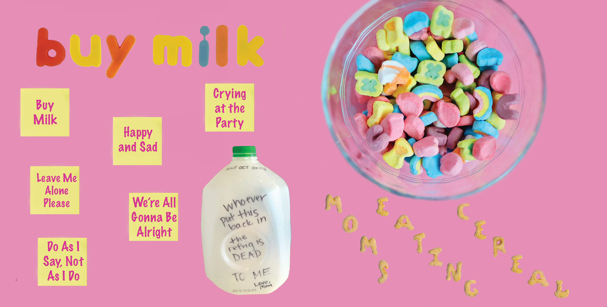
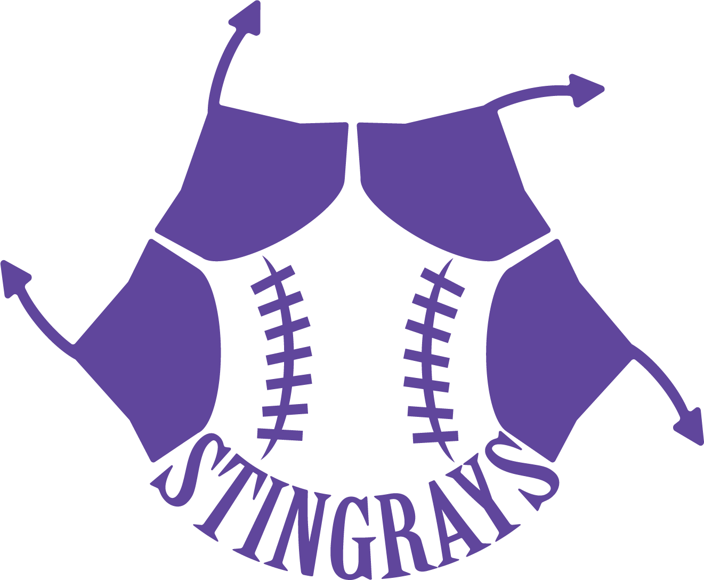
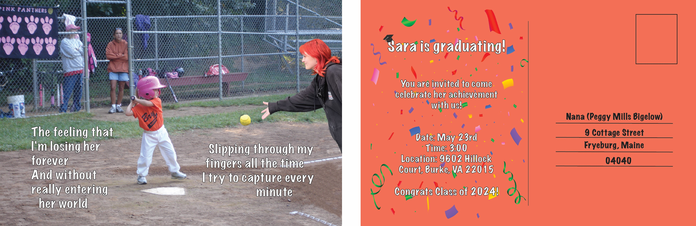

My Portfolio
Visual Design Projects

CD Cover
Created in Photoshop for SMAD 201

Logo
Created in Illustrator for SMAD 201

Now Me meets Old Me
Created in Photoshop and Illustrator for SMAD 201

Newsletter
Created in InDesign for SMAD 201
Video Projects
The Interview
Filmed with a C100 camera, edited in Final Cut Pro, completed for SMAD 302
Daily Occurrence
Filmed with a DSLR, edited on iMovie, completed for SMAD 202
Go Outside
Filmed with a DSLR, edited on Premiere Pro, completed for MCST1150
The First Date
Filmed with a DSLR, edited on Final Cut Pro, completed for SMAD 302